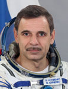

Lyndon B. Johnson Space Center
Houston, Texas 77058
|
National Aeronautics and Space Administration Lyndon B. Johnson Space Center Houston, Texas 77058 |
 |
Biographical Data |
||
Kornienko, Mikhail Borisovich
Roscosmos Test-Cosmonaut
514th cosmonaut of the world
104th cosmonaut of the Russian Federation
BIRTHPLACE AND DATE: Born 15 April, 1960, in Syzran, Kuibyshev region, Russia.
PERSONAL DATA: Married to Irina Anatolievna Kornienko (Savostina); daughter Natalia.
EDUCATION: Graduated from a secondary school in Chelyabinsk, Russia, in 1977; served in paratroops in 1978 – 1980; in 1981 to 1987 he studied at the Moscow Aviation Institute and graduated with an engineering degree (aircraft engine mechanical engineer).
EXPERIENCE: In 1980 Kornienko completed his military service and worked for the Moscow law enforcement agencies from 1980 to 1986. In 1986 started working for a mechanical engineering design bureau as a test engineer. In 1991-1995 he worked for commercial companies. In April 1995 Kornienko started working at the Energia Rocket/Space Corporation (RSC) as an engineer. He was responsible for technical documentation and software for testing and crew EVA training.
SPACEFLIGHT TRAINING: In February, 1998 Kornienko was selected as an Energia test cosmonaut candidate, and in 1999, following basic training at the Yu. Gagarin Cosmonaut Training Center, was qualified as a test cosmonaut.
From August 2001 to February 2003 Kornienko was assigned to the ISS 8 backup crew as an ISS flight engineer and Soyuz TM commander (for a launch on the Shuttle). Due to the Columbia tragedy the crew was reassigned.
From March 2003 to August 2005 participated in RS ISS advanced training. From September 2005 to January 2006 participated in ISS advanced training.
From February 2006 trained as ISS 15 bu engineer and Soyuz TMA bu flight engineer.
From March 2007 to August 2008 participated in RS ISS advanced training.
From August 2008 to April 2010 trained as an ISS 23/24 flight engineer and Soyuz TMA flight engineer.
SPACEFLIGHT EXPERIENCE: From April 2, 2010 to September 25, 2010 completed his first spaceflight as a Soyuz TMA-18 and ISS-23 flight engineer with cosmonaut A. Skvortsov and astronaut T. Caldwell-Dyson (NASA). Performed a spacewalk that lasted for 6 hours and 43 minutes. Kornienko has logged 176 days 1 hour and 18 minutes in space.
AWARDS: Golden Star of the Hero of the Russian Federation (April 12, 2011), Gagarin medal, Honorary citizen of Syzran (2010).
DECEMBER 2012